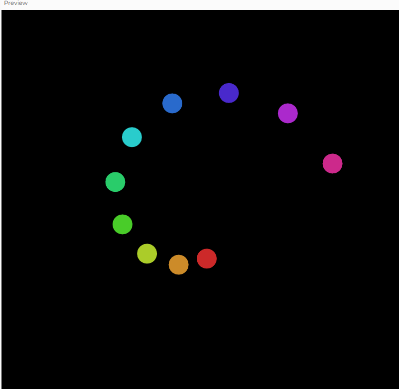
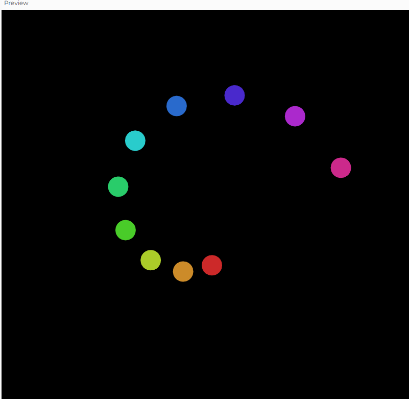
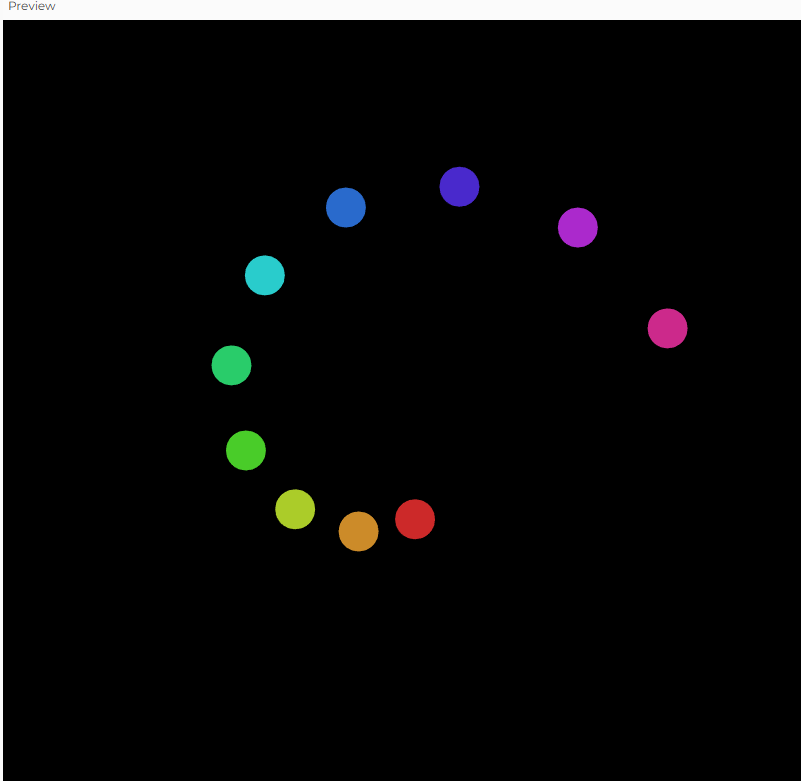

I want to mimic the solar system by drawing different planets to rotate somewhat randomly around the center of the canvas. So first of all, I reused the original example code from our last class; however, I realized that the circles are only rotating on the right.
I then change the assignment of angle, where angle now uses millis() * speed, so that instead of coming back and forward, the circles will keep going onto the same direction.

The rotations is somewhat around the center and random after I added noises, but the circles now does not have their own paths: they are kind of clustering togethor. I implement a sin function for the radius of the circles, hoping that in this way they would rotate around the center.

I fixed the orbital radius, so that instead of using trignometric function sin(), I asked Gemini for help and it suggests orbital spacing and orbital speed: a stable calculation for each circle to have a fixed distance from the center and with different speeds (outer planents have slower orbiting speed). Now I am closer to the solar system. I also moved the closet orbiting circle more outwards, so that I can have some space for a sun in the middle.
To make this more obvious, I also add path of orbiting so that it looks more like a solier system. I also added a sun. I used the raidus for both determining the diameters of the orbiting circle and used the diam for the sun. I also modified the size of the circles, and moved the orbiting pathway backwards so it is not on the circles (i should not draw the path the lastest). I also make the line more appreant because I found out that it could be very hard to see the paths when uploading it to the website.
Now that the planets and sun are setup, I want to replace the shapes with planet and sun images, so that it looks like actual solar system. I want to also use time function so that the sun changes a bit after awhile. I ask Gemini to replace the circles with links, so I can find all the planet and sun images to replace them. Now I have a solar system, yay.